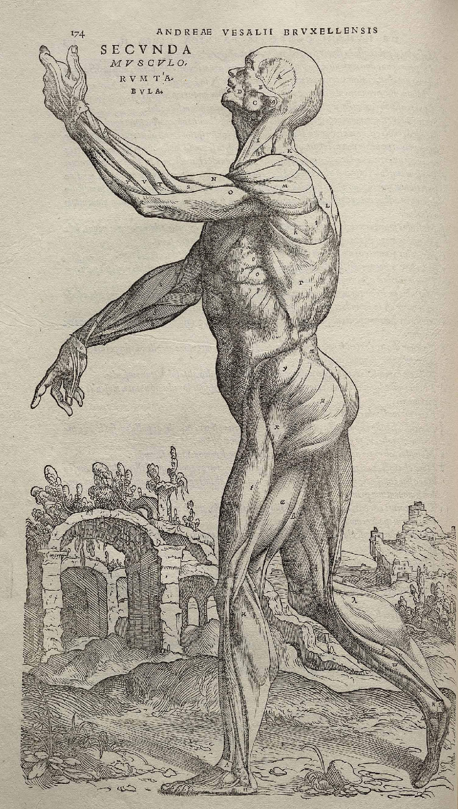

Plate I · Andreas Vesalius, De Humani Corporis Fabrica, 1543 · public domain
How much of yourself can you lose, and go on living? Scroll to find out, and watch the weight.
Now, the least a person can be. No legs, no hips, the pelvis cut away and the skin drawn shut beneath. No shoulders, no arms. The face cleared off, no eyes, no ears, no nose, no tongue. A head and half a trunk. Inside it: a heart that is a pump, lungs worked by a machine, kidneys swapped for a filter, a pancreas down to a drip. Four of the organs are machines now. Only two are still the body's own, the only two no machine can replace, the liver and the brain.
And yet, the person remains
as conscious and aware
as you or I.
Whatever we are has no weight. Schrödinger thought consciousness was single, that we are all one mind. If we have no body or remembered experience to set us apart, why not?
Every engraving is public domain, from Wikimedia Commons: the whole figure is Andreas Vesalius, De Humani Corporis Fabrica (1543); most organs are Henry Vandyke Carter's plates for Gray's Anatomy (1918), with a few from Johannes Sobotta's Atlas of Human Anatomy (1906). Part weights are approximate, from standard anatomical references; the running percentage is computed from them.